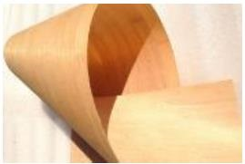
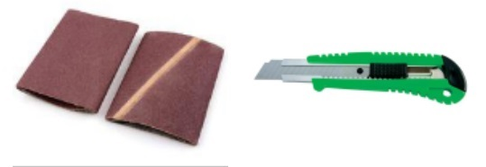
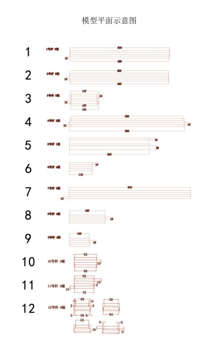
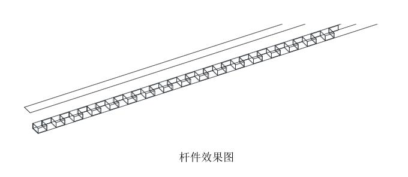
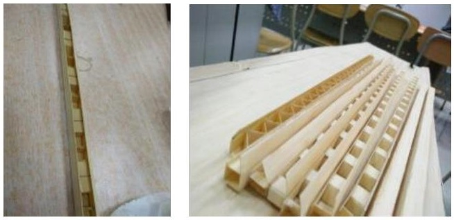
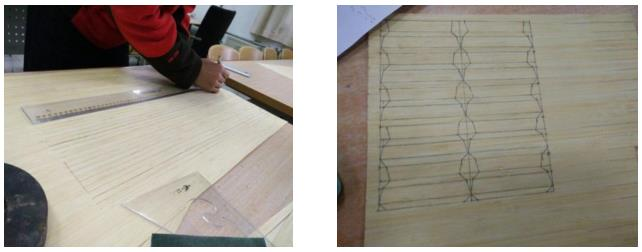
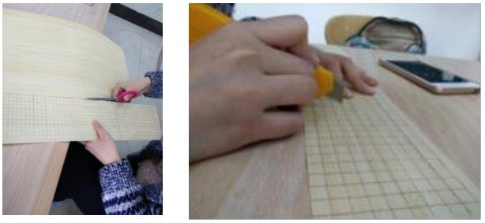
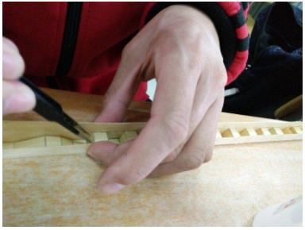
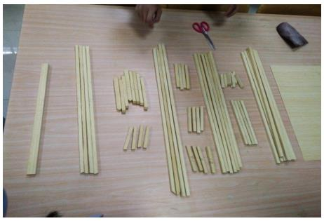
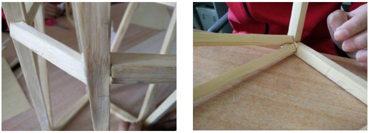

| 1.1 材料
例子一：
| 1.1.1 竹皮
有如下三种规格：
竹材<规格 <款式
1250x430x0.50mm 本色侧压双层复压竹皮
1250x430x0.35mm 本色侧压双层复压竹皮
1250x430x0.20mm 本色侧压双层复压竹皮
力学性能参考值：
弹性模量 1.0x10^4MPa, 抗拉强度 60Mpa， 抗压强度 20MPa ， 泊松比 0.31 |
 |
| 1.1.2 502 胶水
（1）应选择好用的胶水。502 胶水的质量参差不齐，选择一种能瞬粘且粘性强的胶水对模型制作有很大的帮助。
（2）502 对铁制品的粘性不强，在制作杆件时，可在下方铺铁皮或其它铁制品，以防杆件与桌面粘接及桌子的损坏。 |
|
1.2 工具
| 砂纸 打磨杆件端部，获得所需要的杆件精确尺寸打磨结构节点处接触面以增加接触面积
橡皮、直尺、铅笔 在竹皮上绘制杆件平面设计图 |
 |
| 剪刀、美工刀 切割修剪材料
镊子 用以夹持细小构件，防止胶水粘手
橡胶手套 防护双手（也可以用胶布缠绕指尖） |
|
2 结构设计与制作准备
2.1 结构设计
| 2.1.1 制作前期知识准备
在着手制作模型前应对题目有充分的了解，包括所使用材料的力学性能（如竹皮的抗拉强度优越），模型的加载方式及其分数算法（重要）。 |
|
| 2.1.2通过力学常识建立较合理的结构模型。利用软件模拟加载对比，选出最优的结构形式。受力合理的结构能更好的承受荷载，在保证模型结构质量较小的情况下有较小的加载位移。这一步将决定结构的最终受力形态，至关重要。根据计算机模拟的结果，构思出最终的模型结构形式。
如上图所示，模拟时将竹皮看做各向同性的弹性材料，空心杆件改为实心杆件。故结构的位移同荷载成正比，对结构施加赛题要求的荷载，通过质量（即体积）及位移结果可看出后一个模型更优越。 |
|
2.2 制作准备
| 2.2.1 CAD3D 建模辅助设计
确定模型的结构形式后。可用建模绘出其效果图，然后通过量取杆
件的尺寸得出杆件平面设计图（对于异形杆件尤为重要），方便杆件的制作与安装。 |
 |
| 3.1.1 杆件的结构形式 形式（借鉴钢结构，未实测）
了解各种杆件截面形式的优缺点，选择合适的截面形式。
|
|
|
|
| <3.1.1 杆件的结构形式 形式（借鉴钢结构，未实测）。了解各种杆件截面形式的优缺点，选择合适的截面形式。看看例子便知：
例子：
| 3.1.2 本次模型的杆件结构形式
本次模型选用内部加肋的杆件形式，杆件效果图及内部肋的图片如下。
|
 |
| 显示结果 |
|
|
| 2.2.1 CAD3D 建模辅助设计
确定模型的结构形式后。可用建模绘出其效果图，然后通过量取杆
件的尺寸得出杆件平面设计图（对于异形杆件尤为重要），方便杆件的制作与安装。 |
 |
| 3.1.1 杆件的结构形式 形式（借鉴钢结构，未实测）
了解各种杆件截面形式的优缺点，选择合适的截面形式。
|
|
2.2 制作准备
| 2.2.1 CAD3D 建模辅助设计
确定模型的结构形式后。可用建模绘出其效果图，然后通过量取杆
件的尺寸得出杆件平面设计图（对于异形杆件尤为重要），方便杆件的制作与安装。 |
|
| 3.1.1 杆件的结构形式 形式（借鉴钢结构，未实测）
了解各种杆件截面形式的优缺点，选择合适的截面形式。
|
|
3.2 杆件制作方法
以本次杆件制作为例，具体制作方法如下。
| 3.2.1 杆件外皮
① 用铅笔绘制外皮轮廓。
|
 |
| ② 通过剪刀或夹板刀沿轮廓线裁断。
|
|
| ③ 由于竹皮质地粗糙，将裁剪完的竹条用砂纸打磨，打去竹皮的毛边，这样便于 502 胶的粘合。
|
|
| ④ 轻轻划过外皮四个面之间的缝隙，沿划过的痕迹轻轻折起外皮，方便杆件粘合。但不要完全裁断，以保留部分强度，防止杆件受力时外皮之间崩开。
|
|
3.2.2 杆件内部肋
| ① 画出要制作肋的形状，沿肋的宽度方向轻轻刻划，不需刻断（方便折叠）。 |
 |
| ② 沿长度方向裁下肋条，并将肋按照最后形状折好，待用。 |
|
3.2.3 杆件的粘接 杆件的粘接
| ① 粘接时借助镊子摆好肋后即可滴胶，注意胶水用量切勿过多，以防增加杆件不必要的重量。 |
 |
| ② 为增加节点处的接触面积，增加杆件的强度，可在杆件端部加一横隔。 |
|
3.3 模型的整体拼装
| 3.3.1 杆件的准备
确定所有类型杆件的根数及制作质量无误后，即可开始模型整体拼装。建议制备杆件时，可多做几根同类型的杆件备用，拼接模型时可以选用作精良的杆件。
|
 |
| 3.3.2 基本构件的拼接
① 先将基本构件所需拼接的位置用铅笔标记，后拼接。拼接时下部设透明胶或报纸，防止构件与桌子相连。且拼接杆件时注意根据内部肋的方向及杆件的受力形式确定杆件的放置方式。 |
|
| ② 拼接中不易粘合的结点可加竹皮，增加接触面以加大节点强度。3.3.3 模型的框架拼装
将杆件的定位画于最薄的竹皮纸上，待模型粘接完毕后拆下即可。结构模型做的成功与否，决定于两、柱构件能否保持原有笔直程度形成整体框架，组装后能否形成整体共同工作。
|
|
3.4 模型的结点处理
| 3.4.1 模型结点缝隙的填塞
杆件的尺寸同设计要求难免存在误差，所以杆件的连接处也难免存在缝隙，这时将缝隙用竹皮填满，滴上 502 胶水即可。由于 502 胶水的强度甚至高于竹皮强度，这样的做法并不削弱结点的连接。
|
 |
| 3.4.2 模型结点的加强
有时模型结点受力较大且受力复杂，为防止节点的破坏，可于节点处进行加强处理。 |
|
|
|
<① 当杆件肋的密度一定时，对于四面均有竹皮包裹的杆件（包括工字钢型杆件），跨中承载力与杆件质量（边长）成一次关系，可通过该关系近似估算所做杆件的承载能力。
- <② 当肋的密度较稀疏时，三面杆件，四面杆件同五面杆件相比，承载力值与质量值之比最高的是受压侧加厚的五面杆件，因为肋的密度稀疏，当荷载加大时，起先受压侧竹皮与侧壁及内部肋分离，后上部竹皮被压曲，最终杆件丧失继续承载的能力。杆件发生受弯破坏。
- ③ 当杆件内部肋密度加密时，杆件于承受荷载处发生局部受压破坏。由“杆件承载力与质量关系图”可看出杆件的荷载值与质量值之比显著增加，说明增加肋的密度对杆件的承载能力起控制作用。>
|
|
|
| |
<① 当肋的密度一定时，杆件的承载能力与其质量（边长）呈正比，应选择合理的经济截面。
- ② 虽然杆件内部肋的密度对杆件承载能力起控制作用，但为增加杆件承载力肋不可能无限加密，比如肋的密度到 10mm 间隔时，制作就很麻烦。
|
|
|
| <以本次的模型承受竖向荷载拱的设计制作为例。
4.2.1 确定模型的计算简图，计算杆件受力
上部拱为三次超静定的组合结构（上部为刚架，下部为桁架），可通过结构力学求解器求解内力（ANSYS 分析也可），后验算杆件的强度和稳定性。
如图为拱结构的计算简图，及其杆件受力。
4.2.3 结构的实际制作
为充分利用竹皮的受拉性能，且增加结构整体刚度，减小竖向荷载下的位移。
将竹皮预先施加预应力绷紧，同时受压杆件微微起拱。
施加预应力方法如下：
将受杆件施加与荷载相反的竖向力（实际为 2N），受压杆件弯曲如上图。
粘贴竹条，待其粘牢固定后撤去作用于杆件上的竖向荷载，此时由于杆件要恢复受弯变形，而竹皮受拉限制杆件的变形恢复，因此竹皮绷紧且杆件微微起拱。
4.2.4 结构的优化与创新
理论计算同实际情况多少会有出入，而实践却是检验真理的唯一标准，要想得到好的结构形式，不仅需要出色的设计，充分发挥材料的性能。还要踏踏实实地做实验去验证结构的可行性。如此次承受竖向荷载拱的制作历经三次才成功，结构的破坏原因如图（通过百度影音一帧一桢观察所得，实际破坏为脆性破坏，仅凭肉眼根本无从识别破坏的起始点）。由于竹皮粘接中难免会使竹皮面倾斜，承受荷载过程中，竹皮截面的拉应力并非均匀，当局部拉应力超过竹皮抗拉强度时，竹皮开始断掉，后整个结构损坏。
|
|
|
| |